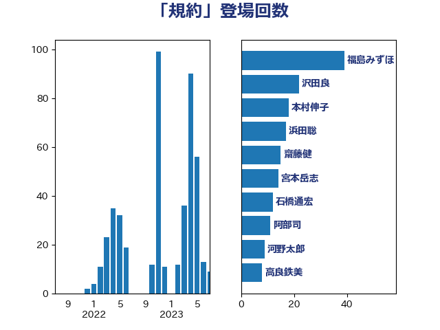

単語「規約」

| 福島みずほ | 社会民主党 | 39 回 |
| 沢田良 | 日本維新の会 | 22 回 |
| 本村伸子 | 日本共産党 | 18 回 |
| 浜田聡 | NHK党 | 17 回 |
| 齋藤健 | 自由民主党 | 15 回 |
| 宮本岳志 | 日本共産党 | 14 回 |
| 石橋通宏 | 立憲民主党 | 12 回 |
| 阿部司 | 日本維新の会 | 11 回 |
| 河野太郎 | 自由民主党 | 9 回 |
| 高良鉄美 | 無所属 | 8 回 |
| 谷田川元 | 立憲民主党 | 8 回 |
| 山添拓 | 日本共産党 | 8 回 |
| 井上哲士 | 日本共産党 | 8 回 |
| 岡本あき子 | 立憲民主党 | 7 回 |
| 漆間譲司 | 日本維新の会 | 6 回 |
| 岸田文雄 | 自由民主党 | 6 回 |
| 葉梨康弘 | 自由民主党 | 5 回 |
| 末松信介 | 自由民主党 | 5 回 |
| 加藤勝信 | 自由民主党 | 5 回 |
| 仁比聡平 | 日本共産党 | 5 回 |
| 鈴木庸介 | 立憲民主党 | 4 回 |
| 道下大樹 | 立憲民主党 | 4 回 |
| 永岡桂子 | 自由民主党 | 4 回 |
| 松本剛明 | 自由民主党 | 4 回 |
| 山田太郎 | 自由民主党 | 4 回 |
| 嘉田由紀子 | 無所属 | 4 回 |
| 長妻昭 | 立憲民主党 | 3 回 |
| 鎌田さゆり | 立憲民主党 | 3 回 |
| 米山隆一 | 立憲民主党 | 3 回 |
| 水岡俊一 | 立憲民主党 | 3 回 |
| 林芳正 | 自由民主党 | 3 回 |
| 山田勝彦 | 立憲民主党 | 3 回 |
| 鰐淵洋子 | 公明党 | 2 回 |
| 野村哲郎 | 自由民主党 | 2 回 |
| 谷公一 | 自由民主党 | 2 回 |
| 秋葉賢也 | 自由民主党 | 2 回 |
| 石川大我 | 立憲民主党 | 2 回 |
| 白石洋一 | 立憲民主党 | 2 回 |
| 泉健太 | 立憲民主党 | 2 回 |
| 小西洋之 | 立憲民主党 | 2 回 |
| 小林鷹之 | 自由民主党 | 2 回 |
| 寺田稔 | 自由民主党 | 2 回 |
| 塩村あやか | 立憲民主党 | 2 回 |
| 吉良よし子 | 日本共産党 | 2 回 |
| 中川郁子 | 自由民主党 | 2 回 |
| 中川正春 | 立憲民主党 | 2 回 |
| 下野六太 | 公明党 | 2 回 |
| 齊藤健一郎 | 無所属 | 1 回 |
| 鬼木誠 | 立憲民主党 | 1 回 |
| 高橋千鶴子 | 日本共産党 | 1 回 |
| 高橋克法 | 自由民主党 | 1 回 |
| 高市早苗 | 自由民主党 | 1 回 |
| 須藤元気 | 無所属 | 1 回 |
| 青木愛 | 立憲民主党 | 1 回 |
| 青山大人 | 立憲民主党 | 1 回 |
| 鈴木義弘 | 国民民主党 | 1 回 |
| 谷合正明 | 公明党 | 1 回 |
| 西岡秀子 | 国民民主党 | 1 回 |
| 藤井比早之 | 自由民主党 | 1 回 |
| 蓮舫 | 立憲民主党 | 1 回 |
| 若宮健嗣 | 自由民主党 | 1 回 |
| 芳賀道也 | 国民民主党 | 1 回 |
| 簗和生 | 自由民主党 | 1 回 |
| 田村智子 | 日本共産党 | 1 回 |
| 牧島かれん | 自由民主党 | 1 回 |
| 牧山ひろえ | 立憲民主党 | 1 回 |
| 熊谷裕人 | 立憲民主党 | 1 回 |
| 渡辺周 | 立憲民主党 | 1 回 |
| 渡辺創 | 立憲民主党 | 1 回 |
| 清水真人 | 自由民主党 | 1 回 |
| 榛葉賀津也 | 国民民主党 | 1 回 |
| 梅村みずほ | 日本維新の会 | 1 回 |
| 柚木道義 | 立憲民主党 | 1 回 |
| 斎藤嘉隆 | 立憲民主党 | 1 回 |
| 平木大作 | 公明党 | 1 回 |
| 川合孝典 | 国民民主党 | 1 回 |
| 小野田紀美 | 自由民主党 | 1 回 |
| 宮本徹 | 日本共産党 | 1 回 |
| 塩川鉄也 | 日本共産党 | 1 回 |
| 堤かなめ | 立憲民主党 | 1 回 |
| 北神圭朗 | 無所属 | 1 回 |
| 仁木博文 | 無所属 | 1 回 |
| 中条きよし | 日本維新の会 | 1 回 |